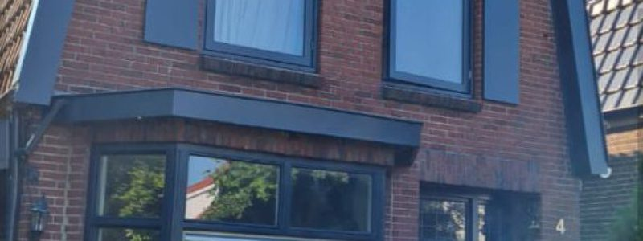

Eerst even kennismaken
Vertel ons over uw plannen. We bespreken uw wensen, bekijken wat nodig is en denken met u mee.
UW SCHILDER & AFWERKER IN OVERIJSSEL
Schilderwerk, stucwerk en de details die uw woning afmaken. Van een fris kozijn tot een complete ruimte: we denken met u mee en pakken het zorgvuldig aan.
↗Uw plannen alvast zien?Ontdek de interactieve 3D-afwerkstudio01 / ONS VAKWERK
Een enkele ruimte of een complete woning. We denken mee, pakken aan en hebben oog voor de details die het verschil maken.
Wat mogen we voor u doen?VAKWERK IN BEELD
Een verzorgd kozijn, strak houtwerk en aandacht voor de afwerking. Bekijk het werk van dichtbij en klik door de foto's.

02 / AANGENAAM, KLEMENT
Uw huis is de plek waar u zich thuis wilt voelen. Daarom gaat ons werk verder dan een mooie laag verf. Het begint met luisteren naar uw wensen en eindigt met aandacht voor de afwerking.
Van kozijnen tot complete wanden: bij Klement vindt u schilderwerk en aanvullende afwerking onder één dak. Voor uw woning, werkplek of bedrijfspand in Overijssel.
03 / UW IDEE. ALVAST IN BEELD.
Een nieuwe wandkleur, glad stucwerk of frisse kozijnen? Probeer het in onze 3D-afwerkstudio. Draai de kamer en schuif tussen vóór en na.
Geef de wanden een nieuwe kleur. Vergelijk de bestaande, verkleurde afwerking met uw gekozen tint.
INTERACTIEF 3D-VOORBEELDUw keuze wordt als HEX-waarde ingevuld.
Een RAL-code verwijst naar een vaste kleurstandaard. Merken en winkels hebben daarnaast eigen namen en codes. Deze tool herkent de 24 RAL-kleuren uit de selectie, HEX-waarden en RGB-waarden. Andere RAL-, NCS- en merkkleuren zijn nog niet gekoppeld; een onbekende code wordt niet geschat.
Een code op uw kleurstaal die hier niet herkend wordt? Vermeld die bij uw wensen in de offertehulp. Dan bespreken we de juiste kleur samen.
Kleurstalen bij HORNBACH ↗Uw kleurcode vinden bij GAMMA ↗Bron van deze schermkleur: RAL-Shop ↗Daglicht is een sfeerweergave. Kies Codekleur voor de digitale kleurwaarde zonder lichtfilter.
Dit is een ontworpen 3D-voorbeeld, geen voorspelling van uw woning of een echt klantproject. Licht, glans en structuur zijn illustratief. Bekijk uw definitieve kleur altijd met een echte kleurstaal bij u thuis.
04 / ZO WERKEN WE
U vertelt wat u voor ogen heeft.
Wij maken de volgende stap helder.
Vertel ons over uw plannen. We bespreken uw wensen, bekijken wat nodig is en denken met u mee.
U krijgt een offerte op maat. Samen stemmen we het werk, de afwerking en de planning af.
We voeren het werk zorgvuldig uit en lopen de afwerking samen met u na. Zo weet u waar u aan toe bent.
GEWOON, ECHTE ERVARINGEN
★★★★★“Deze mannen werken keurig netjes met oog voor detail.”
★★★★★“... iemand die echt meedenkt, eerlijk advies geeft ...”
Een selectie uit openbare Google-reviews. De score is een momentopname, geen automatisch bijgewerkte koppeling.
05 / UW PLANNEN BEGINNEN HIER
Een klein idee of een groot plan? Vertel het ons. Met een paar eenvoudige stappen zet u uw vrijblijvende aanvraag klaar.
Vrijblijvend. Een definitieve prijs volgt na afstemming van uw klus.
NOG IETS WETEN?
Staat uw vraag er niet tussen?
We helpen u graag persoonlijk verder.
Voor binnen- en buitenschilderwerk, kozijnen, latex spuiten, stucwerk, behangen en het plaatsen van plinten. U kunt ook meerdere werkzaamheden combineren. Vertel ons uw plannen, dan bespreken we wat mogelijk is.
Ons werkgebied is Overijssel, met Twente als vertrouwde regio. Vul uw plaats in bij uw aanvraag. We stemmen de mogelijkheden voor uw locatie samen af.
Ja. Gebruik de offertehulp of neem direct contact op. Op basis van uw wensen en de situatie maken we een passend voorstel. U beslist daarna of u het werk wilt laten uitvoeren.
Nee, een eerste idee is genoeg. Vertel welke ruimtes of onderdelen u wilt aanpakken. Kleuren, afmetingen en de geschikte afwerking bespreken we samen.
Dat hangt af van de werkzaamheden, de planning en bij buitenwerk ook het weer. Geef uw gewenste periode door. We bespreken de beschikbaarheid voordat we afspraken maken.
KLEIN IDEE? GROOT PLAN?